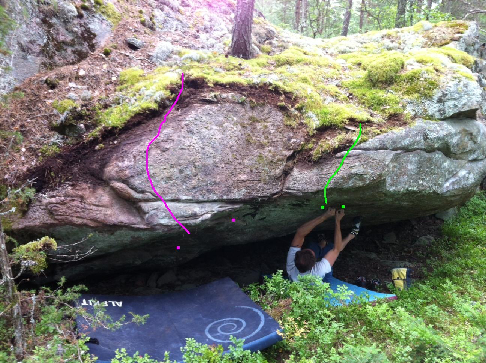
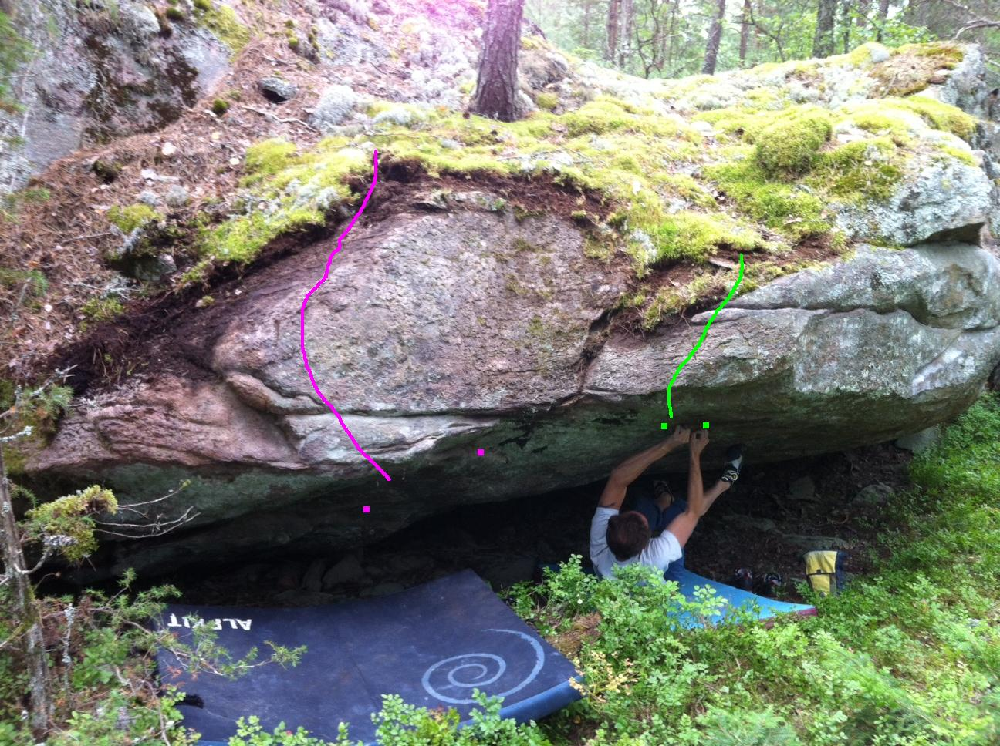

Lat: 59.432768 Long: 13.488464
Senaste tillskottet till Karlstad boulders. Utspridda block och väggar av samma karaktär som Färjestad boulders. Inte lika stort, men heller inte lika utspritt. Outvecklat, men potential till en del fint.
<div style="width: 355; float: right; margin-left: 10px; padding: 3px; border: solid 1px #cccccc;">
<googlemap version="0.9" lat="59.40753" lon="13.500137" type="map"> 59.432768, 13.488464, Djupdalen (ungefärlig position) </googlemap>
</div>
Från Filipstadsvägen
Sväng av E18 mot väg 63 Filipstad. Kör mot Filipstad i några hundratal meter. Sväng av höger mot Djupdalen och sväng direkt vänster mot Djupdalen under väg 63. Fortsätt rakt fram några kilometer. Du bör se en mast sticka upp ur skogen på vänster sida. Leta efter en parkering några hundra meter längre fram på höger sida vid en av två avtagsvägar. En vägbom gömmer sig i buskaget vid den avtagsväg som är närmast klättringen. Parkera
vid busshållplatsen som är lite längre fram där området öppnar upp sig något. Har du kört fram till bron över Klarälven har du kört för långt. Vänd och leta. Knalla upp i skogen vid busshållplatsen och upp på åsen. Sök och du ska hitta. Ju mer du letar, desto mer hittar du. Ungefär 5 min från parkering.
Från Färjestad/skårevägen
Sväng av E18 mot stadsdelen Rud och Färjestad, följ skyltning mot Färjestad BK's arena Löfbergs Lila Arena. Fortsätt förbi denna och travbanan. Så småningom kommer du fram till en korsning och har bron över Klarälven till vänster. Se beskrivning ovan för resterande vägbeskrivning.
Klättringen vid Djupdalen påminner väldigt mycket om
. Del av samma förkastning som Färjestad, Anneberg och Hästspåret och här finns en god samling av olika sorters problem.
Stället har varit känt en längre tid, men ändå har väldigt lite klättring skett. Lathet att borsta + ovetskap om stället troliga faktorer. Hoppas på ändring eftersom det finns olika sorters problem i alla svårighetsgrader vilket borde tilltala flera.
Solen silar sig fram genom träden ända tills den går ner på kvällen.
Generellt ok med platta landningar eller i blåbärsris. Dock finns även mer otäcka stenlandningar. Dödstaket kan därtill bjuda på riktiga susare där man kan trilla över höga kanter och garanterat förstöra sig.
Bra stenkvalité och strukturen i klippan ger bra friktion.
Myggen uppträder som vanligt i värmländsk skog, ta med sprej, stift. Dock inga myror som kan störa.
Har du uppgifter om FA, gjorda leder osv?
Generellt få repetitioner av problemen varpå alla grader är föremål för justering/diskussion. Ändra gärna till vad DU upplever är korrekt grad, så vi får konsensus.
Likt Färjestad kan man prata om övre och nedre delar allt eftersom man letar sig ner från åsen mot botten av dalen. Sektionerna delas upp och beskrivs uppifrån och ner samt söderut till norrut.
Översiktsbild kommer så småningom som förklarar bättre. Nu får man utgå från bilder och förklarande text.

På väg upp från parkering/vägen springer du ganska snart (5 min?) på denna lilla sva-vägg. Gissningsvis 5 meter bred och 3 meter hög? Snäll lutning och trevlig landning gör den lämplig för alla. Gissningsvis 2 leder gjorda. uppgift saknas om FA och grad.
 



Beroende på hur du går från parkering/vägen upp genom skogen mot/på åsen, så springer du troligen på denna eller lilla sva-väggen först av alla sektioner. Denna ligger uppe på åsen och känns tydligt igen på granen som växer nästan genom väggen.
Observera att sommaren 2012 identifierades en större torrgran som blåst ner mot klippan. Den är fastkilad mot en gren precis över "en bra start på kvällen". Förr eller senare torde den rasa ner. En session med motorsågen hade eliminerat denna överhängande fara. Någon?
Fler och fler problem har blivit gjorda på övre klippan, men några nyturer återstår.
Uppdelad i två sektioner.
Vänsterdelen
Mycket estetisk sten/klippa med ett tämligen greppfritt och kraftigt överhäng/tak till generellt grepprik läpp. Bjuder på blandad problemkompott. Idel sittstarter och en 6c vid tunna sneda sprickan hittills svåraste problemet. Hårdare projekt finns dock.
Högerdelen
Utmärker sig med en gran som växer nästan genom klippan mitt på. En handfull problem gjorda.
Vänster delen (problemen räknas upp från vänster till höger.
Högerdelen.
Ett inte speciellt tilltalande block med ett begränsat klätterbart parti mitt på. Ligger direkt till vänster om tydliga dvärgblocket. Utrymmet mellan blocken fungerar som upp och nedstigningspassage.


Blocket uppkallat efter det första problem som är gjort på det.
Ett 5-6 meter högt block med två tydliga, relativt tunna tvärsprickor som klyver det rakt över. Oftast platt landning, men tyvärr finns nivåskillnader och bulliga stenar. Flera paddor och spotters ingen dum idé.
I princip hela blocket blev putsat 2009-06-14 då även några småträd runtom fälldes till förmån för upptorkning och det öppna landskapet.
Problemen uppräknade från vänster till höger.


Snett ner från dvärgblocket hittar du denna läckerbit.
Fick smaka stålborste första gången 2009-06-14. Taket såg vid första inspektion tämligen grepplöst ut. En sten lossnade dock vilket direkt utnyttjades till att etablera två problem.
Det underlättar om du konsulterar Inspector Gadget angående indragbara teleskop-ben och utdragbara armar innan press.
Tappar du fötterna och får sällsynt kraftig pendel, så kanske du lyckas trilla över kanten till fallhöjd ner i buskar, sten och allmänt aj aj.
Ett inbjudande block med flera vertikala problem till vänster och höger om själva "taket". (Döds)taket i sig bjuder på jugfestival i relativt brant överhäng med 2-3 individuella problem. Spottning omöjlig vilket gör att pendel och släpp här garanterat skickar dig över avsatsen och 4 meters ytterligare dropp ner i skog och sten. Funderingar pågår om man kan säkra upp med någon form av repanordning. Annars är det överkapacitet och mental övertygelse som gäller vilket kanske återspeglas i problemnamnen och brist på repetitioner.
Putsat och grovrensat juni -09 då även lite grenar och småträd tagits bort vilket underlättar framkomligheten och förhoppningsvis bidrar till upptorkningen.


Några hundratal meter längre in i dalen ligger dessa block. Klippan är putsad och marken förberedd på ett sådant sätt att klättring skett här inom rimlig tidsrymd.
För att hitta hit, så bege dig längst ner i dalen och vandra uppåt/inåt skogen från vägen sett. Speja hela tiden åt höger efter ett högre tydligare bergsparti. En bäck slingrar sig fram i botten på dalen inte långt från blocken. Leta och du skall finna.
Ingen information finns om FA och grader på dessa stenar. Har DU information om detta så klicka på redigeraknappen ovan och fyll i.
Oklart om något vettigt att klättra på finns ännu längre in i skogen.

Ytterligare X antal block identifierade. Beskrivningar och leder kommer allt eftersom de klättras. Titta in med jämna mellanrum för att få senaste uppdateringen.
Ytterligare X antal block identifierade. Beskrivningar och leder kommer allt eftersom de klättras. Titta in med jämna mellanrum för att få senaste uppdateringen.
Kategori:vertikalt
Kategori:överhäng
Kategori:bouldering
Category:Värmland